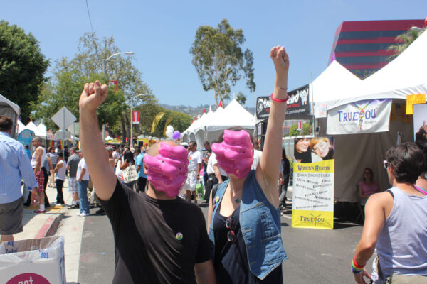

Facial Weaponization Suite protests against biometric facial recognition — and the inequalities these technologies propagate — by making "collective masks" in workshops that are modeled from the aggregated facial data of participants, resulting in amorphous masks that cannot be detected as human faces by biometric facial recognition technologies. The masks are used for public interventions and performances.
One mask, the Fag Face Mask, generated from the biometric facial data of many queer men's faces, is a response to scientific studies that link determining sexual orientation through rapid facial recognition techniques. Another mask explores a tripartite conception of blackness: the inability of biometric technologies to detect dark skin as racist, the favoring of black in militant aesthetics, and black as that which informatically obfuscates.
A third mask engages feminism's relations to concealment and imperceptibility, taking veil legislation in France as a troubling site that oppressively forces visibility. A fourth mask considers biometrics' deployment as a security technology at the Mexico-US border and the nationalist violence it instigates. These masks intersect with social movements' use of masking as an opaque tool of collective transformation that refuses dominant forms of political representation.